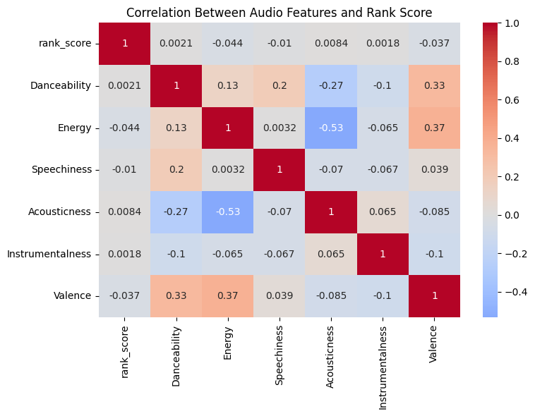
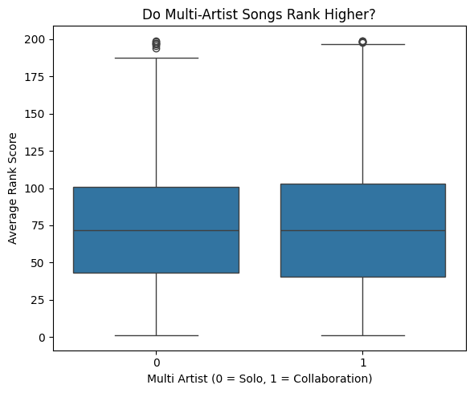
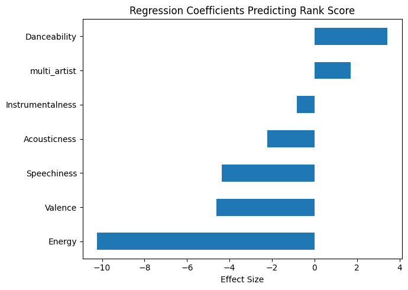

Tutorial Blog
Data Analysis Tutorial - Spotify Top 200
Spotify provides a public API that includes playlist data and detailed audio features for individual tracks, such as Danceability, Energy, Speechiness, and Valence.
For this project, I analyze a dataset containing Spotify’s official Top 200 songs from 2016 to 2023. The goal is to explore which musical characteristics are most associated with higher-ranking songs and whether collaborations outperform solo artists.
Research Questions
- Which audio features significantly predict higher chart ranking?
- Do songs performed by multiple artists achieve higher rankings than solo-artist songs?
Dataset Overview
The dataset includes the following variables:
- Rank
- Title
- Artists
- Danceability
- Energy
- Speechiness
- Acousticness
- Instrumentalness
- Valence
- Points (Total)
Each row represents a song’s daily appearance in the Spotify Top 200.
Data Cleaning and Feature Engineering
To prepare the dataset for analysis, I:
- Created a
multi_artistvariable indicating whether a song has multiple performers. - Converted ranking into a
rank_scorewhere higher values indicate better performance. - Collapsed the dataset so each song appears only once.
- Computed average rank and total days in the Top 200 for each song.
Correlation Between Audio Features and Rank

The heatmap above shows how each audio feature correlates with average rank score. We can see which characteristics are most strongly associated with higher-ranking songs. Positive correlations indicate that higher values of a feature are linked to better rankings.
Multi-Artist Songs vs Solo Songs

This boxplot compares average rank scores for solo and multi-artist songs. It helps answer whether collaborations tend to perform better after controlling for audio features. We can see differences in the distribution of rank scores between the two groups.
Regression Coefficients of Audio Features and Collaboration Status

This plot shows the effect size of each feature on average rank score according to a linear regression model. Features with larger positive values are associated with higher ranks, while negative values indicate that increasing that feature tends to lower the ranking. The multi_artist coefficient shows the adjusted effect of collaborations on song ranking.
Key Insights
- Danceability and Energy tend to be positively associated with higher rankings.
- Acousticness and Instrumentalness are negatively associated with rank.
- Multi-artist collaborations show a small positive effect on ranking.
- Songs that appear frequently in the Top 200 often exhibit these high-ranking audio features.
As a bonus fun fact that I enjoyed: The song featured the most days of any during this time period was Sunflower by Post Malone with a incredible 3262 days included in the Top 200 Playlist.